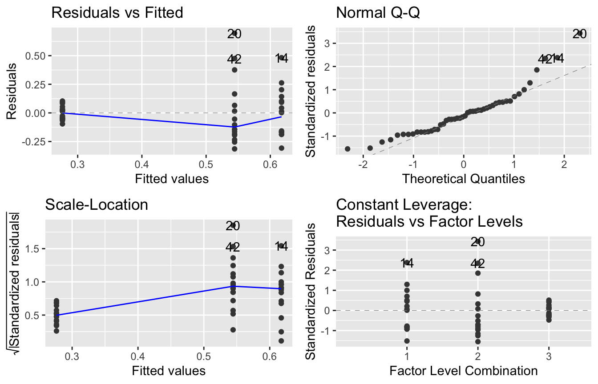
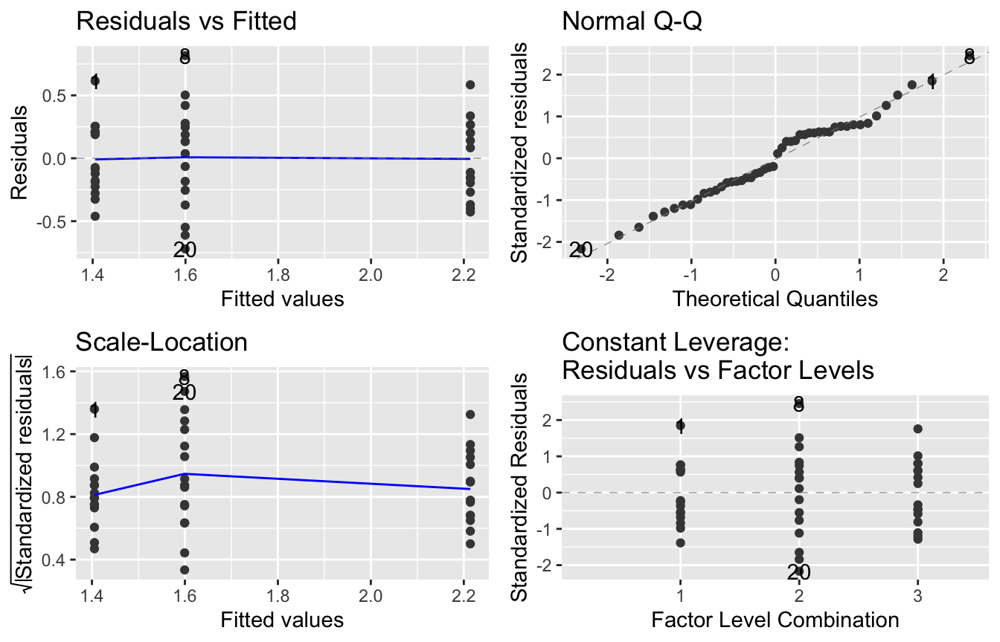
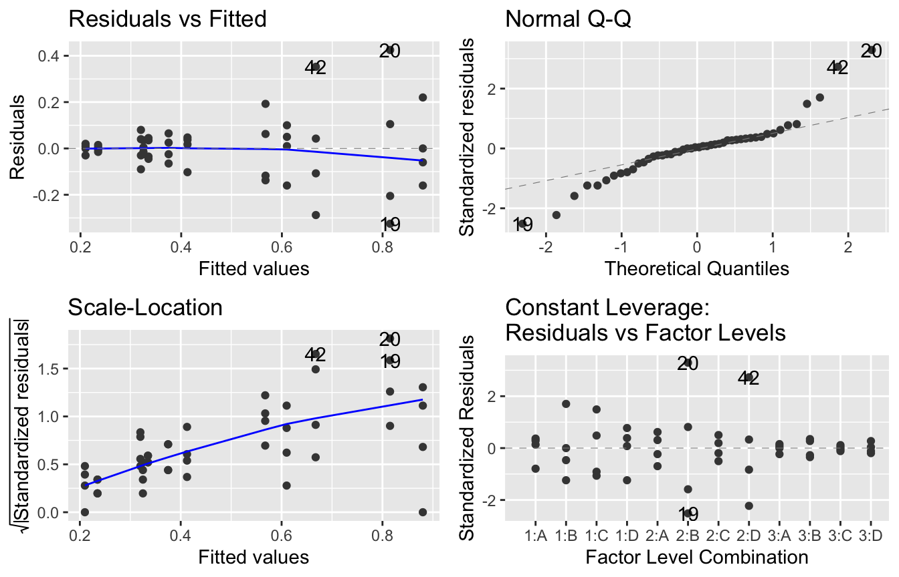
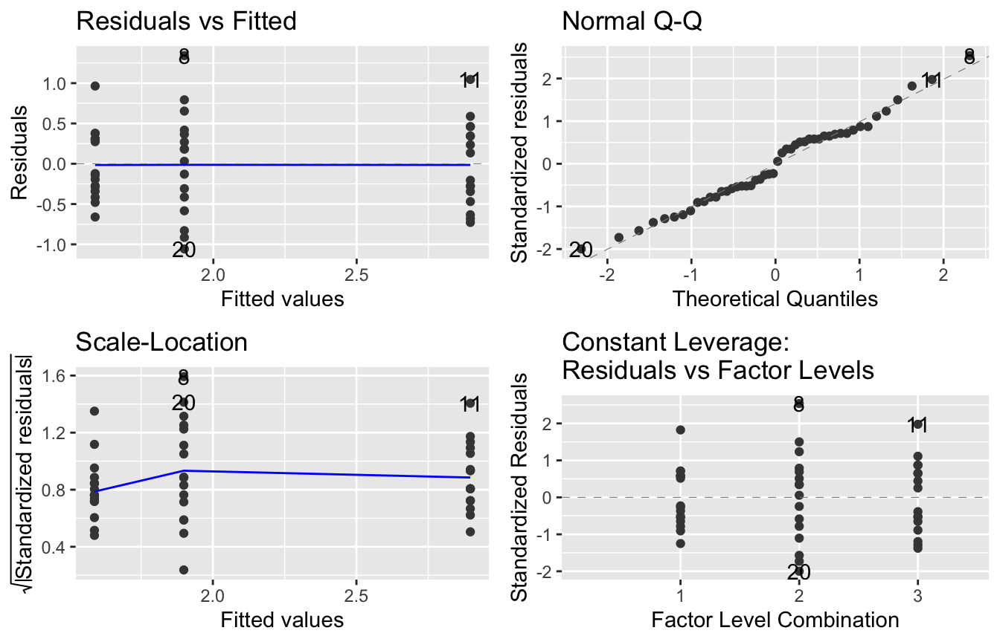
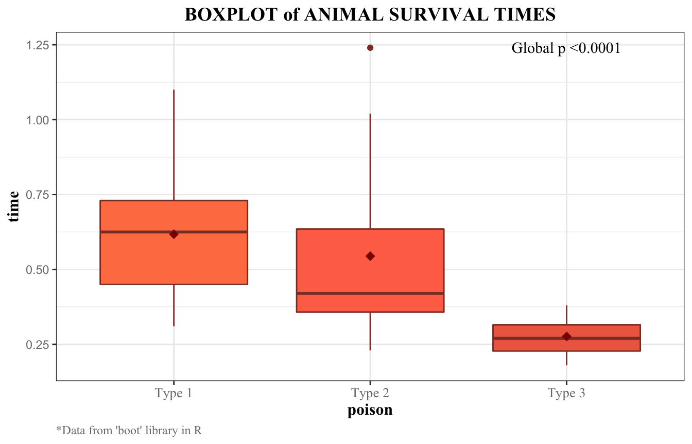
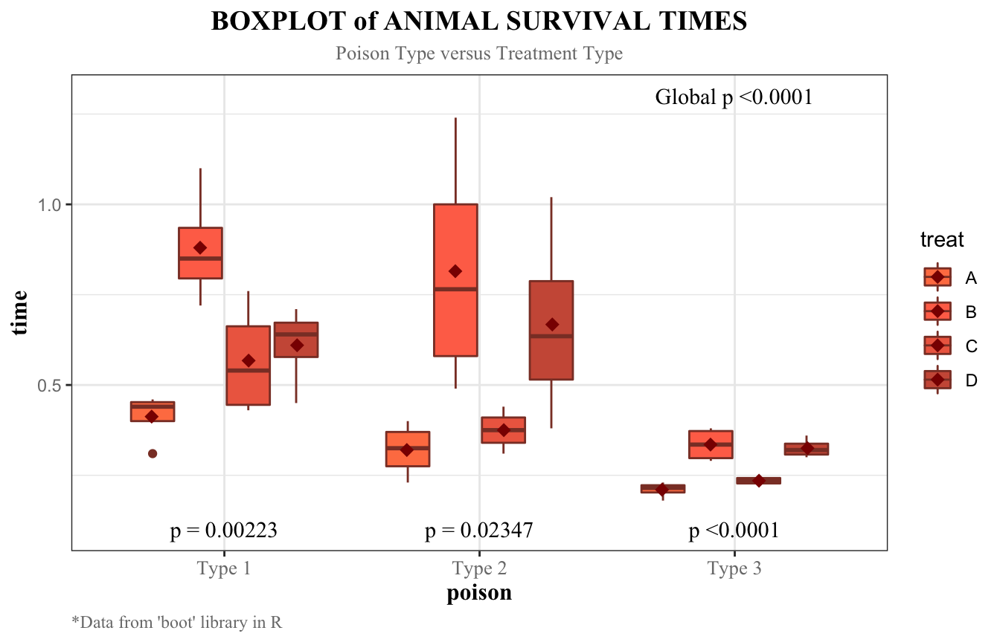
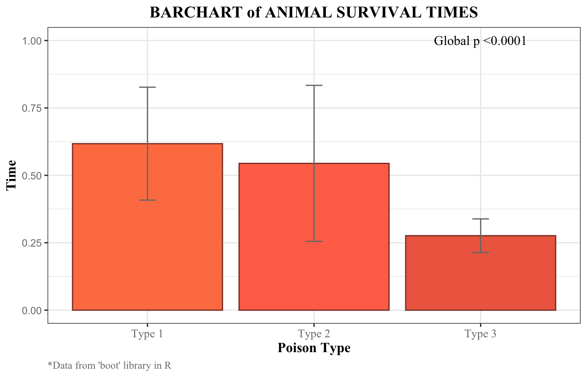
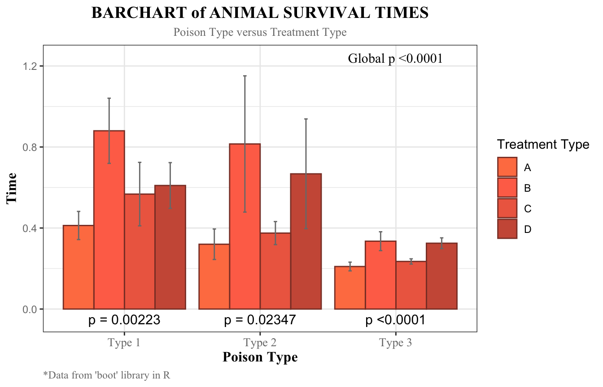
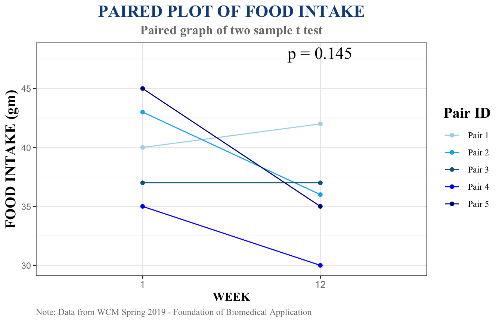

The sumcomp package (Cai and He 2019) provides an efficient way to summarize continuous response variables by categorical explanatory variable(s) by creating nice tables and graphs to display the general information of the data as well as the results of inference. Tables and graphs can be exported to HTML and PDF by using R-markdown.
Users should have the following packages installed before using the sumcomp package:
multcomp, ggfortify, data.table, MASS, shiny, ggplot2, tidyverse
Users need to have sumcomp package zip file in order to use the package. To load the package using R prompt, enter:
library(sumcomp)
This document is an overview of the usage of sumcomp package with real examples. Example datasets come from boot package called poisons (Box, G.E.P. and Cox, D.R. (1964) An analysis of transformations (with Discussion). Journal of the Royal Statistical Society, B, 26, 211–252.) and a teaching dataset NOERmouse from Weill Cornell Medicine.
Structure of this document:
sumcomp package, including required packages and example datasets.sumcomp package.The sumcomp package contains 8 functions
groupsum provides a summary table of continuous response variable by categorical explanatory variables. p.adj.compare provides a summary table of adjusted p-valuesfor pairwise comparisons. compare.2.factors provides a specific contrast test results for 2 factors contains 2 groups in each.
boxcomp provides a good visualization of boxplots for either 1 predictor or 2 predictors. barchart provides a good visualization of bar chart for either 1 predictor or 2 predictors. pairplot provides a good visualization of two-sample paired test for paired data.
assumption.check performs the normality diagnosis. boxcoxTrans performs the data transformation by boxcox procedure.
Example dataset is from ‘boot’ package call ‘poison’ (Box, G.E.P. and Cox, D.R., 1964). It contains 48 records and 3 attributes. Here display the first 10 rows of the data.
| time | poison | treat |
|---|---|---|
| 0.31 | 1 | A |
| 0.45 | 1 | A |
| 0.46 | 1 | A |
| 0.43 | 1 | A |
| 0.36 | 2 | A |
| 0.29 | 2 | A |
| 0.40 | 2 | A |
| 0.23 | 2 | A |
| 0.22 | 3 | A |
| 0.21 | 3 | A |
| Variable Name | Relationship | Variable Type | Description |
| time | Response | Continuous | Survival time of the animal in units of 10 hours |
| poison | Explanatory | Factor | Factor with levels 1, 2 and 3 giving the type of poison used |
| treat | Explanatory | Factor | Factor with levels A, B, C and D giving the treatment |
We are interested in the effects on animal survival time with different types of poison used. Different treatments given on different poisons might have different effects on animal survival time. Detecting such effect is also our purpose.
The original data summaries are shown as below:
groupsum(poisons$time, poisons$poison) %>%
kableExtra::kable(align = 'c') %>%
kableExtra::kable_styling(full_width = F)| poison | n | n.complete | mean.sd | median.IQR | pval.anova | pval.KW |
|---|---|---|---|---|---|---|
| 1 | 16 | 16 | 0.62 +/- 0.21 | 0.62 (0.45, 0.73) | ||
| 2 | 16 | 16 | 0.54 +/- 0.29 | 0.42 (0.36, 0.64) | ||
| 3 | 16 | 16 | 0.28 +/- 0.06 | 0.27 (0.23, 0.32) | <0.001 | <0.001 |
The original data summaries are shown as below:
groupsum(poisons$time, poisons$poison, poisons$treat) %>%
kableExtra::kable(align = 'c') %>%
kableExtra::kable_styling(full_width = F)| poison | treat | n | n.complete | mean.sd | median.IQR | pval.anova |
|---|---|---|---|---|---|---|
| 1 | A | 4 | 4 | 0.41 +/- 0.07 | 0.44 (0.4, 0.45) | |
| 2 | A | 4 | 4 | 0.32 +/- 0.08 | 0.32 (0.27, 0.37) | |
| 3 | A | 4 | 4 | 0.21 +/- 0.02 | 0.22 (0.2, 0.22) | |
| 1 | B | 4 | 4 | 0.88 +/- 0.16 | 0.85 (0.8, 0.94) | |
| 2 | B | 4 | 4 | 0.82 +/- 0.34 | 0.76 (0.58, 1) | |
| 3 | B | 4 | 4 | 0.34 +/- 0.05 | 0.34 (0.3, 0.37) | |
| 1 | C | 4 | 4 | 0.57 +/- 0.16 | 0.54 (0.44, 0.66) | |
| 2 | C | 4 | 4 | 0.38 +/- 0.06 | 0.38 (0.34, 0.41) | |
| 3 | C | 4 | 4 | 0.24 +/- 0.01 | 0.24 (0.23, 0.24) | |
| 1 | D | 4 | 4 | 0.61 +/- 0.11 | 0.64 (0.58, 0.67) | |
| 2 | D | 4 | 4 | 0.67 +/- 0.27 | 0.64 (0.52, 0.79) | |
| 3 | D | 4 | 4 | 0.32 +/- 0.03 | 0.32 (0.31, 0.34) | <0.001 |
In this part, the data diagnosis will be performed. We are going to to check whether the data violates the normality assumptions or not in order to determine whether a transformation is necessary to be proceed, repectively.
assumption.check(poisons$time, poisons$poison)[1] %>%
kableExtra::kable(align = 'c') %>%
kableExtra::kable_styling(full_width = F)
|
assumption.check(poisons$time, poisons$poison)[2]
#> [[1]]
For ONE predictor, both of the table and graphs show a violation to normality assumptions: data are not normally distributed and variance are not constant. Thus, a data transformation will be proceeded as below.
The transformed data is shown below:
poisons_trans <- boxcoxTrans(poisons$time, poisons$poison)
head(poisons_trans) %>%
kableExtra::kable(align = 'c') %>%
kableExtra::kable_styling(full_width = F)| time | poison | time_trans |
|---|---|---|
| 0.31 | 1 | 2.019217 |
| 0.45 | 1 | 1.614628 |
| 0.46 | 1 | 1.593475 |
| 0.43 | 1 | 1.659277 |
| 0.36 | 2 | 1.845944 |
| 0.29 | 2 | 2.101654 |
After transformtion, we check the normality assumptions one more time.
assumption.check(poisons_trans$time_trans, poisons_trans$poison)[1] %>%
kableExtra::kable(align = 'c') %>%
kableExtra::kable_styling(full_width = F)
|
assumption.check(poisons_trans$time_trans, poisons_trans$poison)[2]
#> [[1]]
Both of the tables and plots show a normal distribution of the residual and a constant variance. Data
poisons_transfor single predictor is ready for the rest of the analysis.
assumption.check(poisons$time, poisons$poison, poisons$treat)[1]%>%
kableExtra::kable(align = 'c') %>%
kableExtra::kable_styling(full_width = F)
|
assumption.check(poisons$time, poisons$poison, poisons$treat)[2]
#> [[1]]
For TWO predictors, both of the table and graphs show a violation to normality assumptions: data are not normally distributed and variance are not constant. Thus, a data transformation will be proceeded as below.
The transformed data is shown below:
poisons_trans_2<-boxcoxTrans(poisons$time, poisons$poison, poisons$treat)
head(poisons_trans_2) %>%
kableExtra::kable(align = 'c') %>%
kableExtra::kable_styling(full_width = F)| time | poison | treat | time_trans |
|---|---|---|---|
| 0.31 | 1 | A | 2.552176 |
| 0.45 | 1 | A | 1.894218 |
| 0.46 | 1 | A | 1.861203 |
| 0.43 | 1 | A | 1.964379 |
| 0.36 | 2 | A | 2.264425 |
| 0.29 | 2 | A | 2.692041 |
After transformtion, we check the normality assumptions one more time.
assumption.check(poisons_trans_2$time_trans, poisons_trans_2$poison, poisons_trans_2$`poisons$treat`)[1] %>%
kableExtra::kable(align = 'c') %>%
kableExtra::kable_styling(full_width = F)
|
assumption.check(poisons_trans_2$time_trans, poisons_trans_2$poison, poisons_trans_2$`poisons$treat`)[2]
#> [[1]]
Both of the tables and plots show a normal distribution of the residual and a constant variance. Data
poisons_trans_2for 2 predictors is ready for the rest of the analysis.
groupsum(poisons_trans_2$time_trans, poisons_trans_2$poison) %>%
kableExtra::kable(align = 'c') %>%
kableExtra::kable_styling(full_width = F)| poison | n | n.complete | mean.sd | median.IQR | pval.anova | pval.KW |
|---|---|---|---|---|---|---|
| 1 | 16 | 16 | 1.59 +/- 0.43 | 1.46 (1.29, 1.89) | ||
| 2 | 16 | 16 | 1.9 +/- 0.66 | 2 (1.44, 2.28) | ||
| 3 | 16 | 16 | 2.9 +/- 0.52 | 2.86 (2.52, 3.27) | <0.001 | <0.001 |
groupsum(poisons_trans_2$time_trans, poisons_trans_2$poison, poisons_trans_2$treat) %>%
kableExtra::kable(align = 'c') %>%
kableExtra::kable_styling(full_width = F)| poison | treat | n | n.complete | mean.sd | median.IQR | pval.anova |
|---|---|---|---|---|---|---|
| 1 | A | 4 | 4 | 2.07 +/- 0.33 | 1.93 (1.89, 2.11) | |
| 2 | A | 4 | 4 | 2.57 +/- 0.52 | 2.48 (2.22, 2.83) | |
| 3 | A | 4 | 4 | 3.51 +/- 0.31 | 3.42 (3.33, 3.6) | |
| 1 | B | 4 | 4 | 1.13 +/- 0.16 | 1.14 (1.06, 1.2) | |
| 2 | B | 4 | 4 | 1.29 +/- 0.42 | 1.28 (1.01, 1.56) | |
| 3 | B | 4 | 4 | 2.42 +/- 0.27 | 2.42 (2.2, 2.64) | |
| 1 | C | 4 | 4 | 1.64 +/- 0.35 | 1.67 (1.4, 1.91) | |
| 2 | C | 4 | 4 | 2.22 +/- 0.27 | 2.2 (2.04, 2.38) | |
| 3 | C | 4 | 4 | 3.19 +/- 0.14 | 3.19 (3.11, 3.27) | |
| 1 | D | 4 | 4 | 1.52 +/- 0.26 | 1.43 (1.37, 1.57) | |
| 2 | D | 4 | 4 | 1.51 +/- 0.5 | 1.45 (1.23, 1.73) | |
| 3 | D | 4 | 4 | 2.47 +/- 0.16 | 2.49 (2.39, 2.57) | <0.001 |
p.adj.compare(poisons$time, poisons$poison, compareall = T) %>%
kableExtra::kable(align = 'c') %>%
kableExtra::kable_styling(full_width = F)| pm.p | pm.p.Tukey | pm.p.holm | wilcoxon.p | wilcoxon.p.holm | |
|---|---|---|---|---|---|
| 2 - 1 | 0.420 | 0.588 | 0.420 | 0.118 | 0.118 |
| 3 - 1 | <0.001 | <0.001 | <0.001 | <0.001 | <0.001 |
| 3 - 2 | 0.002 | 0.002 | 0.004 | <0.001 | <0.001 |
p.adj.compare(poisons_trans_2$time_trans, poisons_trans_2$poison, compareal=T) %>%
kableExtra::kable(align = 'c') %>%
kableExtra::kable_styling(full_width = F)| pm.p | pm.p.Tukey | pm.p.holm | wilcoxon.p | wilcoxon.p.holm | |
|---|---|---|---|---|---|
| 2 - 1 | 0.127 | 0.251 | 0.127 | 0.118 | 0.118 |
| 3 - 1 | <0.001 | <0.001 | <0.001 | <0.001 | <0.001 |
| 3 - 2 | <0.001 | <0.001 | <0.001 | <0.001 | <0.001 |
Based on the reuslt from these two table, we can see that the transformation did a good job. The result from t-test become more accurate than before. Also we can conclude that there’s does exist difference between Type 3 and all other groups. Moreover, the table below shows that treatmeant A is different from B and D.
p.adj.compare(poisons_trans_2$time_trans, poisons_trans_2$treat, compareal=T) %>%
kableExtra::kable(align = 'c') %>%
kableExtra::kable_styling(full_width = F)| pm.p | pm.p.Tukey | pm.p.holm | wilcoxon.p | wilcoxon.p.holm | |
|---|---|---|---|---|---|
| B - A | <0.001 | 0.001 | 0.005 | 0.003 | 0.019 |
| C - A | 0.223 | 0.539 | 0.447 | 0.247 | 0.495 |
| D - A | 0.003 | 0.012 | 0.015 | 0.009 | 0.046 |
| C - B | 0.016 | 0.045 | 0.062 | 0.024 | 0.097 |
| D - B | 0.391 | 0.852 | 0.447 | 0.312 | 0.495 |
| D - C | 0.061 | 0.242 | 0.184 | 0.112 | 0.336 |
The graphical summaries are designed to give a direct visualization of specific characteristics of the data. Boxplot and bar chart are the two main plots in this package. Boxplot is designed to display the minimum, first quartile, median, third quartile and maximum from the bottom to the top, respectively. Note that the difference between 3rd quantile and 1st quantile is the IQR. The points inside the boxplots are showing the mean values of the corresponding levels. The barchart shows the mean values as well as the standard errors of each levels. Set ‘normal = T’, the global p-value will be calculated from ANOVA test while from Kruskal-Wallis test if ‘normal = F’.
boxcomp(poisons$time, poisons$poison, normal = T, xname = "Poison Type",
xlabels = c("Type 1", "Type 2", "Type 3"), xlabelfont = 'Times New Roman',
yname = "Time", fillcol1 = c('coral','coral1','coral2'), edgecol = 'coral4',
titlesize = 14, main = "BOXPLOT of ANIMAL SURVIVAL TIMES",
caption = "*Data from 'boot' library in R")
Since the data had already been transformed to follow the normality assumption, we are supposed to use the ANOVA test for displaying the global p-value. P<0.0001 shows that the difference of survival time among different types of poisons are significant at a 0.05 significance level. The boxplot shows an approximately monotone decreasing in survival time moving from Type 1 to Type 3 poisons. However, a post-hoc test should be performed to obtain a more specific information of the difference between groups.
boxcomp(poisons$time, poisons$poison, poisons$treat, normal = T, xname = "Poison Type",
yname = "Time", xlabels = c("Type 1", "Type 2", "Type 3"),
xlabelfont = 'Times New Roman', fillcol2 = c('coral','coral1','coral2','coral3'),
edgecol ='coral4', main = "BOXPLOT of ANIMAL SURVIVAL TIMES", titlesize = 14,
legname = "Treatment Type", subtitle = 'Poison Type versus Treatment Type',
subcol = 'grey48', caption="*Data from 'boot' library in R", globalp_pos = 1.3,
pvalpos = 0.1, pointpos = 0.76)
Since the data is right-skewed, we are supposed to use the non-parametric tests by setting normal = F. The three p-values in groups show that the effect of different treatments on different poisons are significantly different at a 0.05 significance level, indicating an interaction between poison types and treatment types. The boxes in each groups visually show a possible significant difference of survival time among different treatments. However, a post-hoc test should be performed to obtain a more specific information of the difference between groups.
barchart(poisons$time, poisons$poison, normal = T, xname = "Poison Type",
xlabels = c("Type 1", "Type 2", "Type 3"), xlabelfont = 'Times New Roman',
yname = "Time", fillcol1 = c('coral','coral1','coral2'), edgecol ='coral4',
titlesize = 14, main = "BARCHART of ANIMAL SURVIVAL TIMES",
caption="*Data from 'boot' library in R", globalp_pos = 1)
The global p-value < 0.0001 in the barchart shows that the differences between levels are significant at a 0.05 significance level. The bar heights are monotone decreasing from Type 1 to Type 3 poison, showing that type 1 has the highest mean survival time while type 1 has the lowest. The length of the errorbars indicate that type 2 poison has the largest standard errors comparing to type 1 and type 3 since it has the longest errorbar. However, a post-hoc test should be performed to obtain a more specific information of the difference between groups.
barchart(poisons$time, poisons$poison, poisons$treat, normal = T, xname = "Poison Type",
xlabels = c("Type 1", "Type 2", "Type 3"), xlabelfont = 'Times New Roman',
yname = "Time", fillcol2 = c('coral','coral1','coral2', 'coral3'),
edgecol ='coral4', titlesize = 14, main = "BARCHART of ANIMAL SURVIVAL TIMES",
legname = "Treatment Type", subtitle = 'Poison Type versus Treatment Type',
subcol = 'grey48', caption="*Data from 'boot' library in R", pvalpos = -0.05)
The p-values of three poison types give the same information as the p-values from boxplot do. The height of treatment B is the highest in all three types of poisons, meaning that type B might be the most effective treatment to all three types of poisons. The errorbar of treatment B is the longest comparing to other treatment types which indicates that treatment B also has the largest standard error. However, a post-hoc test should be performed to obtain a more specific information of the difference between groups.
pairplot function is for generating two-sample paired plot for matched data. Data should be exactly TWO groups/levels in order to calculate the p-value from two-sample T-test.
Example Data Background
ERα plays a role in regulating appetite. ERα knockout mice eat more than wild type mice and become obese with white adipose inflammation. In the current experiment, Dr. Levin compared wild type (WT) and nuclear only ERα (NOER) mice. The NOER mice cannot signal via the membrane but only through the nucleus. It is important to determine whether membranous ERα function controls appetite. There were 5 mice in each of the two groups. In the spreadsheet (top), one sees Food intake (in gms) over 12 weeks in WT vs. NOER mice. The amount listed is the amount of food consumed over the week per mouse. Body weights for WT and NOER mice are seen at the bottom. The food intake and body weights were measured for each mouse each week from weeks 1 to 12. Food intake for wild type (WT) mice in week 1 and week 12 will be given as an example. Record with same PairNum are regarded as a pair. Data from WCM Spring 2019 - Foundation of Biomedical Application.
| PairNum | Week1 |
|---|---|
| 1 | 40 |
| 2 | 43 |
| 3 | 37 |
| 4 | 35 |
| 5 | 45 |
| PairNum | Week12 |
|---|---|
| 1 | 42 |
| 2 | 36 |
| 3 | 37 |
| 4 | 30 |
| 5 | 35 |
pairplot.2(Week1, Week12, linecol = c('lightblue','deepskyblue2','deepskyblue4',
'blue','darkblue'), main = "PAIRED PLOT OF FOOD INTAKE",
titlesize = 17, titlecol = 'dodgerblue4', xname = 'WEEK',
xlabels = c('1','12'), yname = 'FOOD INTAKE (gm)', ynamesize = 15,
subtitle = 'Paired graph of two sample t test', subsize = 13,
subface = 'bold', subfont = 'Times New Roman', subcol = 'grey48',
capsize = 9, capfont = 'Times New Roman', legname = 'Pair ID',
leglab = c('Pair 1','Pair 2','Pair 3','Pair 4','Pair 5'),
caption = 'Note: Data from WCM Spring 2019 - Foundation of Biomedical Application',
globalp_pos = 48, psize = 6)
The paired plot of the given dataset gave a p-value = 0.145, indicating that the difference between groups are not significant at a 0.05 significance level. Three pairs show a negative slope, one group show a positive slope while the rest one shows no changes. There is no obvious pattern/trend in the plot thus a significant conclusion might not be given.
“Writing an R Package from Scratch.” Not So Standard Deviations, 30 Apr. 2014, hilaryparker.com/2014/04/29/writing-an-r-package-from-scratch/.
Wickham, Hadley. R Packages. OReilly Media, 2015.
Joint, Marginal, and Conditional Probabilities, tinyheero.github.io/jekyll/update/2015/07/26/making-your-first-R-package.html. Wickham, Hadley. R Packages. OReilly Media, 2015.
Add pair lines in R, Retrieved from https://stackoverflow.com/questions/35226008/add-pair-lines-in-r